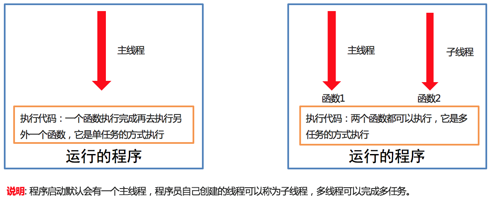
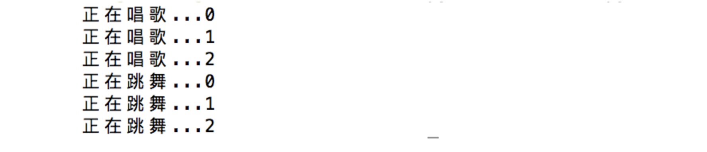

<!DOCTYPE lake>
<p data-lake-id="u8d1b9866" id="u8d1b9866"><span data-lake-id="u919526ce" id="u919526ce">多任务开发，有多种实现方式，从资源占用大小排序：进程 &gt; </span><strong><span data-lake-id="u5fa4bdd5" id="u5fa4bdd5">线程</span></strong><span data-lake-id="udfd79cff" id="udfd79cff"> &gt; 协程</span></p><h2 data-lake-id="A7htX" data-lake-index-type="2" id="A7htX"><span data-lake-id="uf39d3222" id="uf39d3222">线程概述</span></h2><h3 data-lake-id="FcwLz" data-lake-index-type="2" id="FcwLz"><span data-lake-id="u41cca69f" id="u41cca69f" style="color: rgba(0, 0, 0, 0.87)">线程介绍</span></h3><p data-lake-id="u449920e2" id="u449920e2"><span data-lake-id="ub85f921f" id="ub85f921f" style="color: rgba(0, 0, 0, 0.87)">在Python中，想要实现多任务可以使用线程来完成，线程是实现多任务的一种方式。还可以使用进程、协程实现多任务。</span></p><h3 data-lake-id="diyfm" data-lake-index-type="2" id="diyfm"><span data-lake-id="u0386a0ca" id="u0386a0ca" style="color: rgba(0, 0, 0, 0.87)">线程概念</span></h3><p data-lake-id="ud0dfce1d" id="ud0dfce1d"><span data-lake-id="u35946ec1" id="u35946ec1" style="color: rgba(0, 0, 0, 0.87)">进程是分配资源的基本单位, 一旦创建一个进程就会分配一定的资源,</span></p><p data-lake-id="uc83adb60" id="uc83adb60"><span data-lake-id="u22084139" id="u22084139" style="color: rgba(0, 0, 0, 0.87)">线程是cpu调度的基本单位，每个进程至少都有一个线程，而这个线程就是我们通常说的主线程。</span></p><h3 data-lake-id="Dn0Jq" data-lake-index-type="2" id="Dn0Jq"><span data-lake-id="u69953026" id="u69953026" style="color: rgba(0, 0, 0, 0.87)">线程作用</span></h3><p data-lake-id="u11a6e628" id="u11a6e628"><span data-lake-id="u2572049f" id="u2572049f" style="color: rgba(0, 0, 0, 0.87)">多线程可以完成多任务</span></p><p data-lake-id="u13226b82" id="u13226b82"><span data-lake-id="uf61c81bb" id="uf61c81bb" style="color: rgba(0, 0, 0, 0.87)">​</span><br/></p><p data-lake-id="uf9de89c4" id="uf9de89c4"><strong><span data-lake-id="u7e225ab7" id="u7e225ab7" style="color: rgba(0, 0, 0, 0.87)">多线程效果图:</span></strong></p><p data-lake-id="uc3f0abd5" id="uc3f0abd5"></p><p data-lake-id="u7a011787" id="u7a011787"><br/></p><h2 data-lake-id="r3sYV" data-lake-index-type="2" id="r3sYV"><span data-lake-id="u23e6a966" id="u23e6a966">线程编程</span></h2><h3 data-lake-id="ZDoFf" data-lake-index-type="2" id="ZDoFf"><span data-lake-id="u548a55c5" id="u548a55c5" style="color: rgba(0, 0, 0, 0.87)">Python默认单任务</span></h3><p data-lake-id="u72062aa3" id="u72062aa3"><span data-lake-id="uf376df75" id="uf376df75" style="color: rgba(0, 0, 0, 0.87)">接下来我们使用python代码来模拟“唱歌跳舞”这件事情</span></p><p data-lake-id="ufd4f87f4" id="ufd4f87f4"><br/></p><span class="yuque-card-unsupported">[codeblock]</span><p data-lake-id="u794b5181" id="u794b5181"><br/></p><p data-lake-id="uc83ac3d9" id="uc83ac3d9"><span data-lake-id="ue7f9e601" id="ue7f9e601" style="color: rgba(0, 0, 0, 0.87)">运行结果如下：</span></p><p data-lake-id="u29c26855" id="u29c26855"></p><blockquote class="lake-alert lake-alert-warning" data-lake-id="u63e90003" id="u63e90003"><ul list="ua4bb4fd4"><li data-lake-id="ub8fb985e" fid="ucffe6747" id="ub8fb985e"><span data-lake-id="uc201c9e8" id="uc201c9e8" style="color: rgba(0, 0, 0, 0.87)">很显然刚刚的程序并没有完成唱歌和跳舞同时进行的要求</span></li></ul></blockquote><p data-lake-id="u4c05f316" id="u4c05f316"><span data-lake-id="ufa739e3f" id="ufa739e3f" style="color: rgba(0, 0, 0, 0.87)">​</span><br/></p><h3 data-lake-id="IDWER" data-lake-index-type="2" id="IDWER"><span data-lake-id="u9eaca145" id="u9eaca145" style="color: rgba(0, 0, 0, 0.87)">多线程完成多任务</span></h3><span class="yuque-card-unsupported">[codeblock]</span><p data-lake-id="u3f3a9ed2" id="u3f3a9ed2"><strong><span data-lake-id="u225b77d4" id="u225b77d4" style="color: rgba(0, 0, 0, 0.87)">执行结果:</span></strong></p><span class="yuque-card-unsupported">[codeblock]</span><h3 data-lake-id="tcHhD" data-lake-index-type="2" id="tcHhD"><span data-lake-id="u78f30331" id="u78f30331" style="color: rgba(0, 0, 0, 0.87)">小结</span></h3><ol list="ufc244110"><li data-lake-id="u86ca6f13" fid="u9d626078" id="u86ca6f13"><span data-lake-id="u7b331e82" id="u7b331e82" style="color: rgba(0, 0, 0, 0.87)">导入线程模块 </span><code data-lake-id="uf2076c39" id="uf2076c39"><span data-lake-id="u1b5dcdfd" id="u1b5dcdfd" style="color: rgba(0, 0, 0, 0.87)">import threading</span></code></li><li data-lake-id="ub29eefe4" fid="u9d626078" id="ub29eefe4"><span data-lake-id="u2b539369" id="u2b539369" style="color: rgba(0, 0, 0, 0.87)">创建子线程并指定执行的任务</span><code data-lake-id="u8fcf2f84" id="u8fcf2f84"><span data-lake-id="u1c8319f7" id="u1c8319f7" style="color: rgba(0, 0, 0, 0.87)">sub_thread = threading.Thread(target=任务名)</span></code></li><li data-lake-id="ue57a7cfe" fid="u9d626078" id="ue57a7cfe"><span data-lake-id="u5993b245" id="u5993b245" style="color: rgba(0, 0, 0, 0.87)">启动线程执行任务</span><code data-lake-id="u59a8385f" id="u59a8385f"><span data-lake-id="uc4561d94" id="uc4561d94" style="color: rgba(0, 0, 0, 0.87)">sub_thread.start()</span></code></li></ol>